Thera and Turnur Scanning Guide: Difference between revisions
Vega Blazar (talk | contribs) (changed some verbage to make it consistent throughout the wiki) |
(Undo revision 14242 by Awesome Pilot (talk)) Tag: Undo |
||
| (4 intermediate revisions by 2 users not shown) | |||
| Line 1: | Line 1: | ||
{{Template:TS|expanded=all}} | {{Template:TS|expanded=all}} | ||
The Thera and Turnur Scanning Guide is intended to explain how to keep our [https://www.eve-scout.com/ EvE-Scout Wormhole Connections] website up-to-date using the [https://scan.eve-scout.com/ Hub Scan Tool]. | |||
== Overview == | == Overview == | ||
| Line 25: | Line 25: | ||
*** [https://evewho.com/character/2119526651 Okamainen al'Anzomi] - major developer of the authentication part, general architecture, unit test developer and lots more | *** [https://evewho.com/character/2119526651 Okamainen al'Anzomi] - major developer of the authentication part, general architecture, unit test developer and lots more | ||
*** [https://evewho.com/character/2114254786 Tekufah] - advisor about all the in-game details where Sky has no clue and testing the routing algorithm | *** [https://evewho.com/character/2114254786 Tekufah] - advisor about all the in-game details where Sky has no clue and testing the routing algorithm | ||
*** [https://evewho.com/character/2116458565 Vega Blazar] - editing and and documentation | *** [https://evewho.com/character/2116458565 Vega Blazar] - editing, proofreading, and and documentation | ||
** Hub Scan Tool (HST) | ** Hub Scan Tool (HST) | ||
*** [https://evewho.com/character/2113781815 Mzsbi Haev] | *** [https://evewho.com/character/2113781815 Mzsbi Haev] | ||
| Line 133: | Line 133: | ||
* <code>EvE-Scout.TheraMap</code> In-game Hub Mapping Intel Channel | * <code>EvE-Scout.TheraMap</code> In-game Hub Mapping Intel Channel | ||
== Scanning Guide In-Game Notepad | == Scanning Guide In-Game Notepad Checklist == | ||
Notes to copy and paste into in-game notepad. | Notes to copy and paste into the in-game notepad. | ||
Tip: | Tip: Click the handy-dandy copy button on the upper right of the code block to copy all the text! | ||
'''These notes are not automatically updated in-game. Please make sure you're always using the latest version!''' | '''These notes are not automatically updated in-game. Please make sure you're always using the latest version!''' | ||
Latest revision as of 02:12, 25 January 2024
| EvE-Scout Mapping |
|---|
|
Thera and Turnur Scanning |
|
Tools |
The Thera and Turnur Scanning Guide is intended to explain how to keep our EvE-Scout Wormhole Connections website up-to-date using the Hub Scan Tool.
Overview[edit]
- Join the in-game
EvE-Scout.TheraMapchat channel. This channel is for Thera and Turnur mapping communications. - Log in your pilot Hub Scan Tool.
- Use the Hub Scan Tool to check the status of signatures in Thera or Turnur.
- Clear any expired signatures in the Hub Scan Tool.
- Map any new signatures using the Hub Scan Tool and save the bookmarks to the in-game
Signal Cartel \\ Therafolder.
- Have questions? Ask away in the
#mapping-loungeDiscord channel or in-gameEvE-Scout.TheraMapintel channel. - After you have added 5 or more Thera or Turnur wormholes to the EvE-Scout Wormhole Connections website, claim your free fitted covert ops ship by clicking here! Program is courtesy of Tekufah (Thera) and Samari Arila Enaka (Turnur).
Tools of the Trade[edit]
Hub Scan Tool[edit]
- The Hub Scan Tool is a web-based program that helps to coordinate, simplify and speed up the process of scanning and recording Thera and Turnur signatures, while reducing typing errors. The tool makes it quick to see what signatures are expired or new, co-ordinates work between pilots, and maintains the list of signatures published on our public EvE-Scout Wormhole Connections page.
- These tools were created as a gift to Signal Cartel by the Engineering Team:
- API
- Sky Diamond - main devloper of the API and overall project lead
- Ezra Cyrix - unit test developer and helpful listener to Sky's ramblings
- Kamja Seas - jumped at the opportunity to support with a data validation script
- Millener Audeles - advisor with general architecture and other dev exchange
- Okamainen al'Anzomi - major developer of the authentication part, general architecture, unit test developer and lots more
- Tekufah - advisor about all the in-game details where Sky has no clue and testing the routing algorithm
- Vega Blazar - editing, proofreading, and and documentation
- Hub Scan Tool (HST)
- Public Website www.eve-scout.com
- API
Thera and Turnur Scanning Instructions[edit]
Preparation[edit]
- Be in Thera or Turnur, undocked, and preferably cloaked at a safe in the scanning ship of your choice.
- Join the
EvE-Scout.TheraMapchat channel. - Online the shared in-game bookmark folders:
Signal Cartel \\ Thera: this is our private folder. Put your bookmarks here!EVE-Scout \\ Thera: this is our public folder. Only Bookmark Managers have write permission.- Links are given in the Alliance and Intel Channel chat MOTDs.
- Open the Hub Scan Tool and log in your pilot.
- Check the Hub Selector is set correctly:
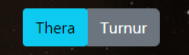
{kind=link}
Assess the Status of the Current Thera or Turnur Map Using the Hub Scan Tool[edit]
Import the current lists of Thera/Turnur signatures from your Probe Scanner window into the Hub Scan Tool. See the instructions in the tool for more information.
Import Signatures Tab[edit]
- Copy all of the Cosmic Signatures from your Probe Scanner window (you need to filter out all anomalies in your Probe Scanner window first) and paste them here (Ctrl-A, Ctrl-C, Ctrl-V), then click the Update button to start mapping. If a new signature appears in your Probe Scanner later, copy and paste just that one into the import tab then Update to add it.
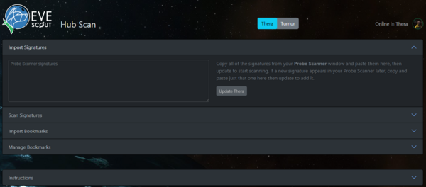
{kind=link}
Scan Signatures Tab[edit]
- The "Scan Signatures" tab in the Hub Scan Tool will populate a table that cross-references with Probe Scanner data:
{kind=link}
{kind=link}
Clear the Expired Signatures[edit]
While it may seem counterintuitive at first, clearing expired signatures (highlighted in orange) should be prioritized over mapping new signatures. This is because capsuleers will plan their routes based on potentially dated information and non-existent wormhole connections. So clear those expired sigs!
- Tip: There is a 'Sort by: working order' option under the signatures list. If you select this, the signatures will sort into working order.
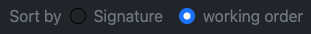
{kind=link}
Confirm the Signature is Expired In-game[edit]
- Open the in-game Probe Scanner window and confirm that the expired signature ID is not listed.
Delete the Expired Signature from Hub Scan Tool[edit]
- By selecting trash icon:
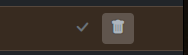
{kind=link}
- The new tool will update almost instantly for all users.
Map the New Signatures[edit]
New signatures need to be scanned down, mapped, and then added to Hub Scan Tool. Using the Tool to help manage your workflow, you will work from left to right for each New Signature highlighted in blue on the "Scan Signatures" table.
- By clicking on the pen icon you automatically claim the signature (if another mapper will try to click on the sig you're working on, an alert will pop up on their Tool denoting the sig has been claimed by your pilot).
Scan Down the Cosmic Signature[edit]
- Scan down the signature and assuming it's a wormhole, you're in business!
- If it's a combat, data, relic or gas site enter its type in the Tool, save it, and move on to the next signature.
NOTE: Teaching proper scanning techniques is beyond the scope of this guide. To learn more about scanning down Cosmic Signatures please see our Explorer's Handbook Scanning page.
Map the Signature[edit]
You will use the Hub Scan Tool to expedite your workflow moving from left to right along the row.
Enter the Outgoing Thera/Turnur-side Wormhole Type[edit]
- Warp to the wormhole.
- Once you are on grid with the wormhole, look for it's type on your in-game Overview. If it's not 'K162', enter it into the Type column of the Hub Scan Tool. For K162 you may just tab to the next field as this will be auto-populated.
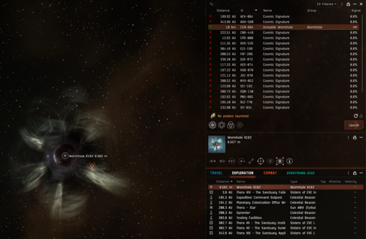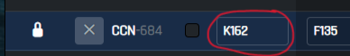 - Also, right click on the wormhole and select the "Show Info" option to discover if the wormhole's lifetime is end-of-life (the info will show “reaching the end of its natural lifetime”). Fill the dedicated tick in Hub Scan Tool if the WH is EOL (end of life).
- Once you are on grid with the wormhole, look for it's type on your in-game Overview. If it's not 'K162', enter it into the Type column of the Hub Scan Tool. For K162 you may just tab to the next field as this will be auto-populated.
{kind=link}
{kind=link}
Enter the Incoming Wormhole Type and Destination System[edit]
- Jump through the wormhole (assuming it's safe).
- Enter the incoming wormhole's type (if it's k162, it will be auto-populated).
- Confirm the far system's name into the Hub Scan Tool (it will auto-detect via the ESI):
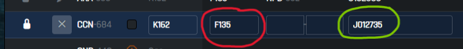
{kind=link}
Enter the Incoming Wormhole Signature[edit]
- Enter the incoming wormhole's signature in the Far System's Signature ID into the Hub Scan Tool.
{kind=link}
{kind=link}
- You've just mapped your first signature! Now, let's create some bookmarks to help share it with all of New Eden.
Create the Far System "In Bookmark"[edit]
Once all the fields in the Hub Scan Tool are filled in for the New Signature, "In bookmark" and "Out bookmark" labels will be generated by the tool.
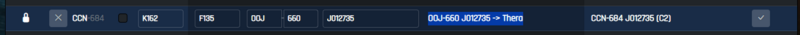
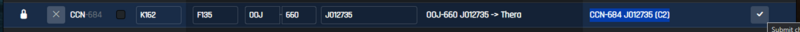
{kind=link}
{kind=link}
- Click the "In bookmark" label to copy it to your clipboard.
- Right-click on the wormhole from your in-game Overview to save its exact location (this is important!).
- Select 'Save Location...':
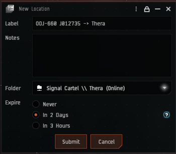
- Select 'Save Location...':
{kind=link}
- A "New Location" window for your in-game bookmark will pop up:
- Paste the "In Bookmark" into the Label field (Ctrl-V).
- Make sure the folder is set to: Signal Cartel \\ Thera.
- Set the Expire time to "Never" (2 days is also okay).
- Click the "Submit" button.
Create the Thera/Turnur-side "Out Bookmark"[edit]
- Jump back through the wormhole to Thera or Turnur.
- In the Hub Scan Tool, click the "Out bookmark" label to copy it to your clipboard.
- Repeat the exact same steps as above to bookmark the Thera/Turnur-side of the wormhole.
- Remember to right-click on the wormhole from your in-game Overview to save its exact location (this is important!).
- It should look like this:
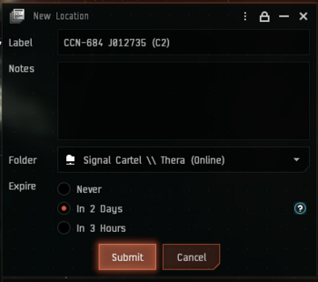
{kind=link}
Submit the New Signature in the Hub Scan Tool[edit]
- Submit the new signature to HST by clicking the tick on the rightmost column of the "Scan Signatures" table in the Hub Scan Tool.
- This will automatically update Hub Scan Tool data into our EvE-Scout Wormhole Connections.
Double-Check Yourself and Then Admire Your Work[edit]
- After submitting your signatures, always double-check yourself:
- Check your bookmarks using the Hub Scan Tool
- Check EvE-Scout Wormhole Connections to make sure your sigs were properly pushed to the website. Note: There may be a delay of up to 10 minutes before the sig shows on the website.
- If everything is ok, please take a moment to bask in the glow of a job well done. Congrats! Now get on with the next sig because Thera and Turnur are ever-changing and mysterious places that you are now a part of!
Feedback[edit]
Comments, suggestions and questions are always welcome. Please post them here:
#mapping-loungeDiscord channelEvE-Scout.TheraMapIn-game Hub Mapping Intel Channel
Scanning Guide In-Game Notepad Checklist[edit]
Notes to copy and paste into the in-game notepad.
Tip: Click the handy-dandy copy button on the upper right of the code block to copy all the text!
These notes are not automatically updated in-game. Please make sure you're always using the latest version!
Thera and Turnur Scanning Guide Checklist (v1.0.0)[edit]
<font size="14" color="#bfffffff"></font><font size="18" color="#ffff0000"><b>NOTE: This checklist does not replace reading the</b></font><font size="18" color="#bfffffff"> </font><font size="18" color="#ffffe400"><a href="https://wiki.signalcartel.space/Thera_and_Turnur_Scanning_Guide">wiki</a><br><br><br></font><font size="18" color="#ff007fff"><b>Thera and Turnur Scanning Checklist </font><font size="18" color="#bfffffff">(v1.0.0)</b><br><br><br></font><font size="14" color="#bfffffff">1. </font><font size="14" color="#ff007fff"><b>Preparation</b></font><font size="14" color="#bfffffff">:<br> - Be in </font><font size="14" color="#ff00ff00"><b>Thera</b></font><font size="14" color="#bfffffff"> or </font><font size="14" color="#ff00ff00"><b>Turnur</font><font size="14" color="#bfffffff"> </b>and in <b>space</b>.<br> - Online the shared in-game bookmark folders:<br></font><font size="14" color="#ff00a99d"><a href="bookmarkFolder:10282750"> Signal Cartel \\ Thera</a></font><font size="14" color="#bfffffff"> - New Bookmarks.<br></font><font size="14" color="#ff00a99d"><a href="bookmarkFolder:5883032"> EVE-Scout \\ Thera</a></font><font size="14" color="#bfffffff"> - Our Public Folder.<br> - Connect to </font><font size="14" color="#ff6868e1"><a href="joinChannel:player_e9cecb0f2c4611edafcf9abe94f5a167">EvE-Scout.TheraMap</a></font><font size="14" color="#bfffffff"> chat.<br> - Open the </font><font size="14" color="#ffffe400"><a href="https://scan.eve-scout.com">Hub Scan Tool</a></font><font size="14" color="#bfffffff"> (</font><font size="14" color="#ff007fff"><b>HST</b></font><font size="14" color="#bfffffff">)<br><br>2.</font><font size="14" color="#ff007fff"><b> Import Signatures Tab</b></font><font size="14" color="#bfffffff">:<br> - Ensure Anomalies are filtered </font><font size="14" color="#ff007fff"><b>OUT</b></font><font size="14" color="#bfffffff"> of the <b>Probe Scanner Window</b> (</font><font size="14" color="#ff007fff"><b>PSW</b></font><font size="14" color="#bfffffff">).<br> - Copy all of the signatures from your <b>PSW</b> and paste them into <b>HST</b>.<br><br>3. </font><font size="14" color="#ff007fff"><b>Scan Signatures Tab</b></font><font size="14" color="#bfffffff">:<br> - The Tool will populate a table that cross-references with <b>PSW</b> data.<br> - </font><font size="14" color="#ff007fff"><b>Tip</b></font><font size="14" color="#bfffffff">: Set "Sort By" to Working order.<br><br>4. </font><font size="14" color="#ff007fff"><b>Check and delete expired sigs</b></font><font size="14" color="#bfffffff">:<br> - Confirm that the expired signature ID is not listed in <b>PSW</b>.<br> - Delete the expired signature.<br><br>5. </font><font size="14" color="#ff007fff"><b>Claim, scan and record the first signature</b></font><font size="14" color="#bfffffff">:<br> - Scan Down the Cosmic Signature and Warp to the WH.<br> - Enter the Outgoing Type, and EOL state.<br> - Jump into the WH then enter the Incoming Type.<br> - The system name will be auto-populated but double check!<br> - Scan and copy the Incoming WH Signature.<br> - Create the Far System "In Bookmark". Click the name in <b>HST</b> to copy.<br> - Jump back through to the Hub and create the Hub-side "Out Bookmark".<br><br>6. </font><font size="14" color="#ff007fff"><b>Submit the signature in HST</b></font><font size="14" color="#bfffffff">.<br><br>7. </font><font size="14" color="#ff007fff"><b>Double-Check Yourself:</b><br></font><font size="14" color="#bfffffff"> - Are the bookmarks <b>ON</b> the wormhole, not the signature?<br> - The bookmarks have the correct names (look in <b>HST</b>) and not set to expire in 3 hours?<br> - Import and check your bookmarks in HST, and report any inconsistencies in </font><font size="14" color="#ff007fff"><b>mapping-lounge</b></font>